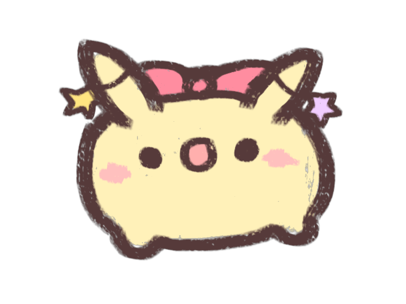

我也想要一隻咪咕！
如果您有意願照顧咪咕，協會會以各項測驗評估您是否有真的有一顆想照顧咪咕的心。
不過只要協會中的咪咕主動與您產生心靈溝通，基本上我們會無條件同意將該隻咪咕給予您進行飼養。

領養方式有「線上評估」與「現場評估」兩種：
- 線上評估
- 現場評估 各分會都有提供現場評估領養服務，評估流程細節請洽各分會。
功能尚未開放。
注意事項：
為了確認咪咕在被領養後是否有受到良好的對待，我們會在領養後一星期、一個月、一年這三個時段要求您將您的咪咕帶回協會進行健康檢查，在這一年期間，我們也會隨機進行兩次視訊電訪。
若發現您並未給予您的咪咕適當的照護，協會有權力強制將咪咕帶回協會，並視情況決定褫奪領養權的時間長短。
為了確認咪咕在被領養後是否有受到良好的對待，我們會在領養後一星期、一個月、一年這三個時段要求您將您的咪咕帶回協會進行健康檢查，在這一年期間，我們也會隨機進行兩次視訊電訪。
若發現您並未給予您的咪咕適當的照護，協會有權力強制將咪咕帶回協會，並視情況決定褫奪領養權的時間長短。